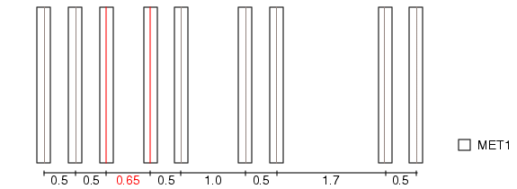

You can check
that the centerline-to-centerline spacing of routing wires are spaced
with an integer multiple of the pitch value relative to each other.
This rule does not apply to distances greater
than the optical radius value of 1.5. As shown in the following
figure, the wires spaced 0.65 units apart are identified as errors
because they are not spaced with an integer multiple of the pitch
value of 1 user unit. However, the wires spaced 1.7 units apart
pass the check because they are outside the optical radius.
Figure 1. Relative Pitch Checking for
Metal Routing
Try It!
 |
Calibre Advanced DRC (eqDRC) Tutorial and Example Kit
Go to this page on Support Center
to download the complete eKit.
This example is in the grid_pitch_checks/metal_routing
example directory.
|
Procedure
- Define the pitch, optical
radius, and maximum metal width values.
VARIABLE optradius 1.5
VARIABLE pitch 0.5
VARIABLE metal_wid 0.4
- Generate centerlines for each
metal line.
cl_widths = DFM SPACE M1 <= metal_wid BY INT HORIZONTAL
cl = DFM COPY cl_widths CENTERLINE
- Identify off-pitch centerlines.
The ALL keyword must be used because DFM COPY with CENTERLINE generates
edges that face arbitrary directions.
cl_space = DFM SPACE cl <= optradius ALL HORIZONTAL GRID pitch
- Attach properties containing
pitch calculations using a DFM Property operation. The properties
generated tell you the spacing distance, by what value the spacing
should be changed, the deviation from the correct pitch value as
a percentage, and the number of pitch values.
metal_pitch_err = DFM PROPERTY cl_space
[distance = EW(cl_space)]
[change_space_by = REMAINDER(EW(cl_space),pitch)]!= 0
[pct_off_pitch =
ROUND(ABS(100*(REMAINDER(EW(cl_space),pitch)/pitch)),0.1)]
[num_pitches = ROUND(EW(cl_space)/pitch,0.1)]
- Output the results using a
DFM RDB operation.
m1_rel_pitch {
DFM RDB metal_pitch_err "eqdrc.rdb" CELL SPACE ALL CELLS NOPSEUDO
CHECKNAME "%_l_"
}